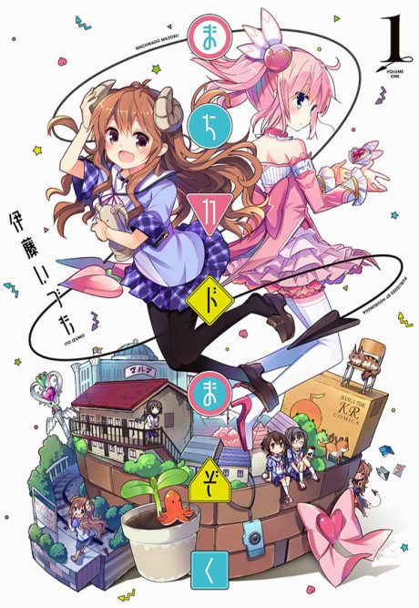

Anime

MangaThe Demon Girl Next Door
まちカドまぞく
After the anime, read the manga from Chapter 52.
7.5AniList
—Animeter
24 ep2 seasons
Is it worth pushing through?
Built from what visitors report across all 2 seasons (24 episodes).
Loading reports…Checking what other people said about this one.
Sign in above with your email to add your report.